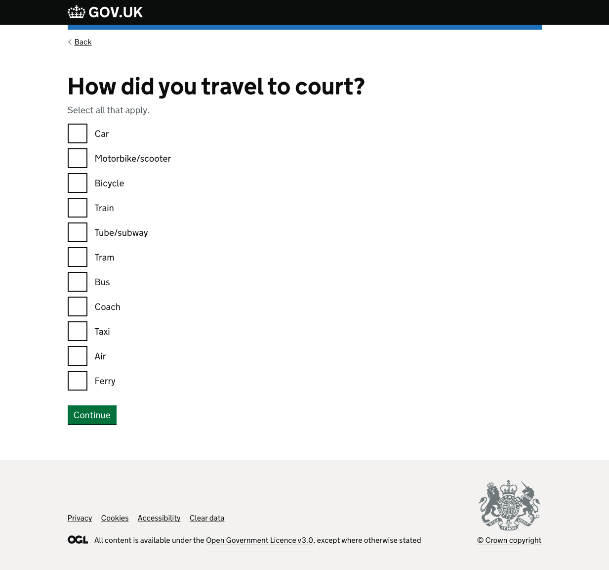
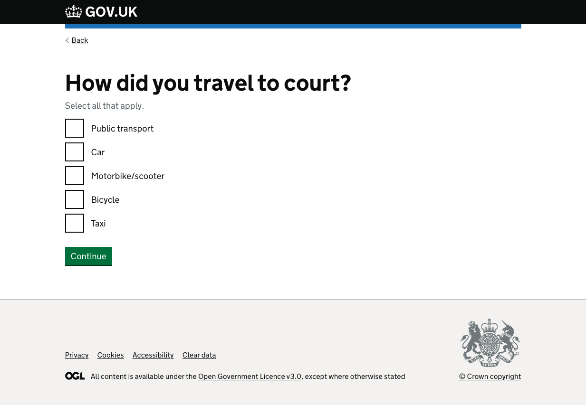
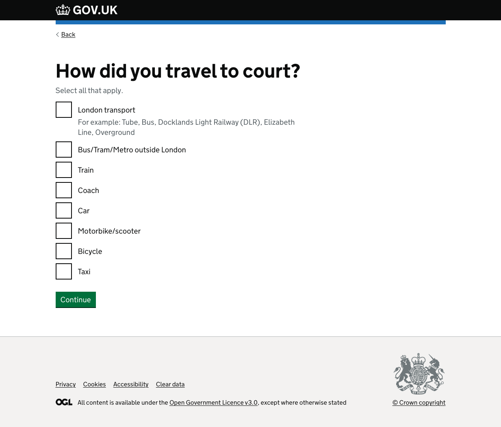
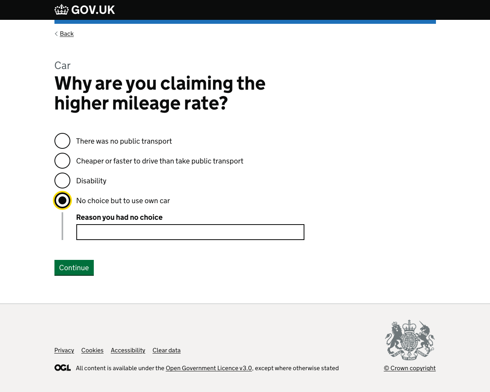
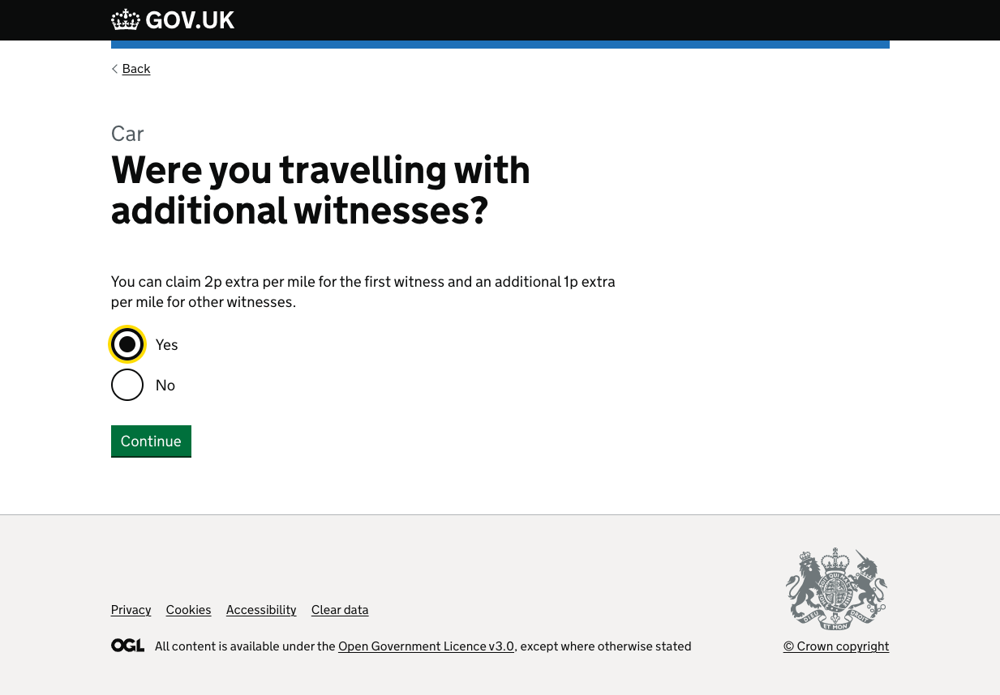
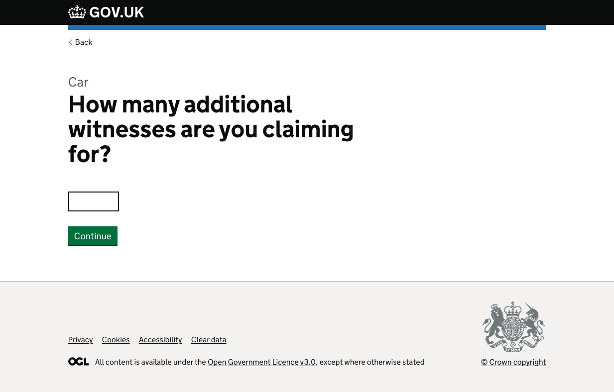
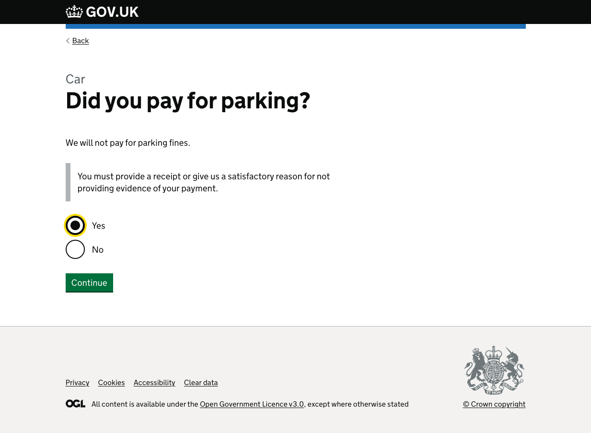
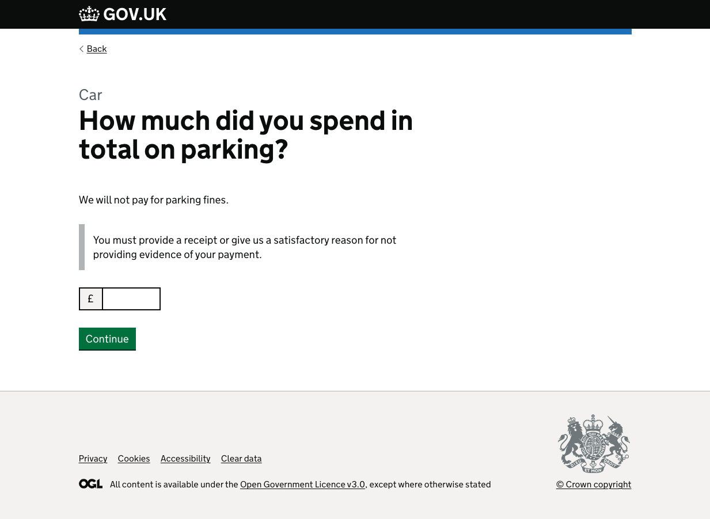
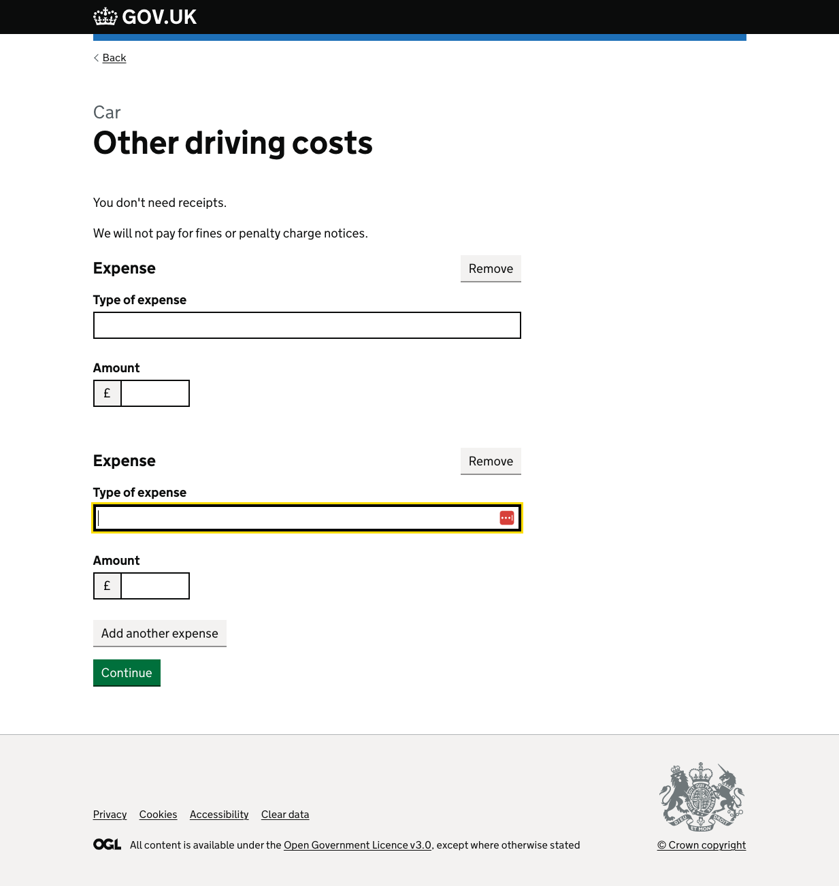
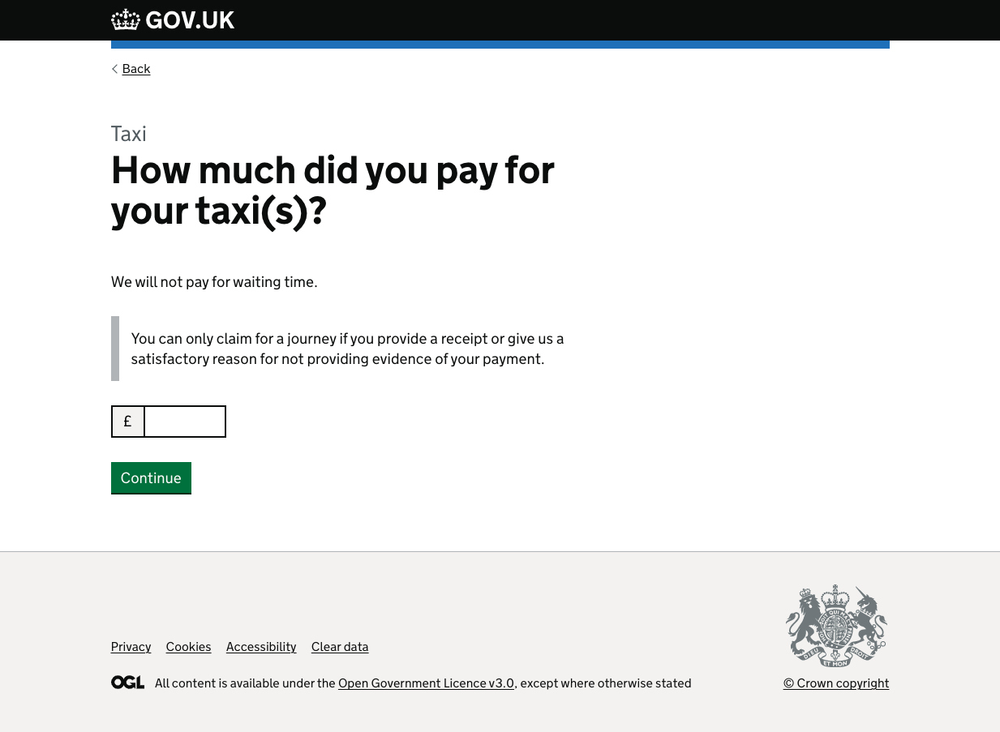

- Users can claim for their travel expenses. The rules are slighlty different for each mode of transport. Some need receipts, some don’t and there are criteria that change how much a user can claim e.g. for mileage.
Screenshots
- 1a. Choose which transport
- 1b. Choose which transport
- 1c. Choose which transport
- 2a. How much did you spend in total
- 2b. How much did you spend per journey
- 2c. How much did you spend updated content
- 3. Higher mileage
- 4. Why claiming higher mileage
- 5. Additional witnesses
- 6. How many additional witnesses
- 7. How many miles
- 8. Parking
- 9. How much did you pay for parking
- 10. Other driving costs
- 11. Enter other driving costs
- 12. Taxi reason
- 13. How much was your taxi
1a. Choose which transport
{kind=link}
First draft, a simple list of everything users can claim for. Can choose all that apply to create a travel journey.
User Research
Seemed ok, but a bit long. Users didn’t have a preference for order, were fine with most popular, alphabetical etc.
1b. Choose which transport
{kind=link}
Grouping public transport together
User Research
Users liked this as it simplified the number of options. We ended up not using it because a clarified policy meant there were differences in how receipts were handled depending on the transport that was used.
1c. Choose which transport
{kind=link}
We clarified the policy around which journeys needed receipts which led us to break out some of the options again. trains need receipts, however overground, DLR etc in London that could be classified as a train does not so we broke them out and attempted to make them clearer.
User Research
Users understand the options and can choose the ones relevent to them
2a. How much did you spend in total

This option asks users to put a total amount for a rail journey (or coach etc) rather than splitting out all the individual pieces of the journey. This means the user needs to total these up.
User Research
Users preferred this option to splitting out each journey and putting amounts for each journey in individually.
2b. How much did you spend per journey

This variation asks the users to input each journey in seperately and we would add the amount up for them. We would use the MOJ pattern used elsewhere in the service for multiple entries.
User Research
Users told us they preferred to put one number in rather than individual journeys.
2c. How much did you spend updated content

The policy was clarified so that users who do not have receipts could still claim if they had a good reason for not having a receipt - e.g. the ticket machine took it at the end of the journey. The variations on asking for these reasons is covered in another article.
User Research
3. Higher mileage

Users who used a car can claim a higher mileage rate if they meet certian criteria - mostly about not being able to use public transport or it being cheaper or quicker.
User Research
The copy on the earlier versions was not clear enough and had to be refined several times. We also added a subtitle above the question to make it clearer to the user where they were in the journey after some users were confused by the jump from train to car.
4. Why claiming higher mileage
{kind=link}
If the user chooses yes on the previous page they need to tell us their reason so that it can be checked if necessary.
User Research
The copy matches the one on the previous page and needed to be revised several times to make it clearer and to make sure the reasons weren’t too wide.
5. Additional witnesses
{kind=link}
Users get additional pence per mile for taking other witnesses to the court.
User Research
This needed to be revised several times to make it clearer exactly who could be claimed for.
6. How many additional witnesses
{kind=link}
User Research
This is clear
7. How many miles

We tell users how much they will be able to claim per mile and ask how many miles they want to claim for.
User Research
In UR most users told us they would either know roughly how many miles the trip would be or they would go to google maps to find out, so we put a link to google maps to make it easier. Most users told us they would be able to enter this information and they understood it would be a round trip.
8. Parking
{kind=link}
For users to claim for parking. We changed the receipt copy to reflect a change in the policy to allow users with a good reason to tell us why they do not have a receipt.
User Research
Users understood this page.
9. How much did you pay for parking
{kind=link}
We changed the receipt copy to reflect a change in the policy to allow users with a good reason to tell us why they do not have a receipt. This page is changed in a later version to bring the reasons for not having a receipt into this page.
User Research
Users understood this page
10. Other driving costs

Users can claim for other costs such as ULEZ and tolls
User Research
Users understood this page, and understood that they could not claim for penalties/fines.
11. Enter other driving costs
{kind=link}
We used the MOJ add another thing pattern on this page so the user can add as many other costs as they want.
User Research
Users understood this page
12. Taxi reason

Users need a good reason to take a taxi. The 3 main reasons were called out at the time to make it easier for users, but there is still a space for ‘edge case’ reasons to be entered. These reasons will be at the discretion of the wakefield team
User Research
This option was iterated several times and users understand it.
13. How much was your taxi
{kind=link}
The receipt copy was changed a few times based on policy updates and to make it clearer to users what we were asking for. The page has changed in later versions to bring the reasons into the page.
User Research
Users understood this page and preferred to put a total amount in rather than individual journeys.